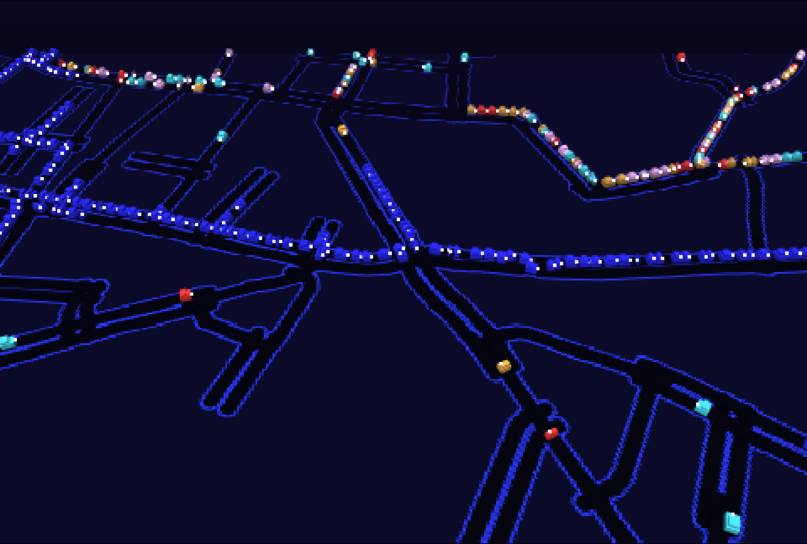
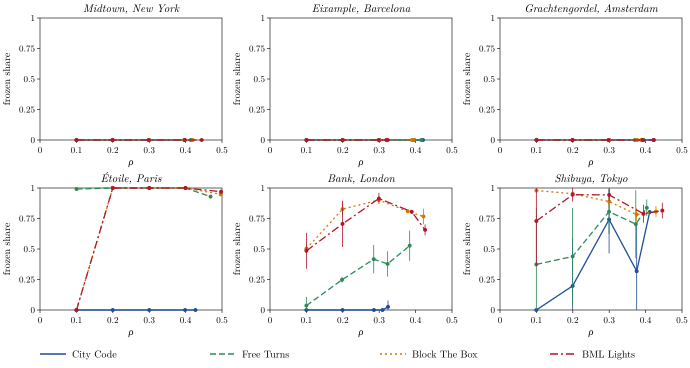
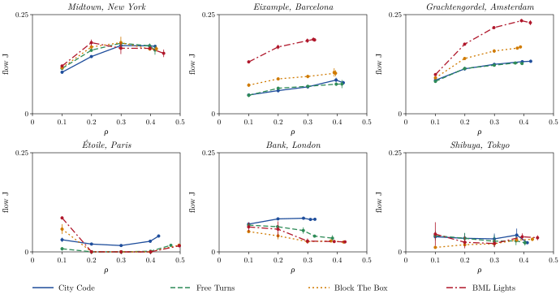

In the Biham–Middleton–Levine (BML) model [1] two species of cars occupy the cells of a $W\times H$ torus. Eastbound cars try to move one cell east on even half-steps, and northbound cars one cell north on odd half-steps. A car moves only if its target cell is empty. Simulations show an abrupt transition from free flow to global jamming as density rises. Rigorous results exist only near the extremes. Angel, Holroyd and Martin proved that the jammed phase occurs at densities close to one [2]. Austin and Benjamini proved self-organisation to free flow below a size-dependent density, for a closely related update rule [3]. Whether a sharp threshold $p_c\in(0,1)$ exists remains open. Intermediate states and their dependence on the torus geometry are well documented numerically [4].
Real streets are not tori. They have arbitrary bearings, one-way and two-way segments, junctions of every degree, turns, signals and open boundaries. This paper asks which parts of the BML mathematics survive the passage to real street networks, and which parts require running dynamics at all. Our answer is that much of it is structural. Gridlock is a statement about cycles of a wait-for relation, and such cycles are constrained by the topology of the network, not by the details of the update rule. Concretely, we contribute the following.
Beyond [1–4], the stochastic cellular automaton of Nagel and Schreckenberg [5] introduced random deceleration (“dawdling”), which we adopt as an optional noise. Exclusion processes with open boundaries, analysed exactly by Derrida, Evans, Hakim and Pasquier [6], explain the boundary-limited flow plateau we observe. On the macroscopic side, the cell transmission model [7] discretises the LWR kinematic-wave theory on networks. The macroscopic fundamental diagram was established empirically by Geroliminis and Daganzo [9]; Daganzo and Geroliminis [8] approximated it analytically from network geometry and signal timing alone. Our throughput bound is the microscopic, capacity-only counterpart of that idea. Deadlock as a cycle in a wait-for graph is classical in operating systems [10]. Our Theorem 2 is that condition specialised to committed vehicles. Digital straight lines and their cutting sequences are Sturmian words [11, 16], and the grid traversal we use to rasterise is that of Amanatides and Woo [15]. Weighted cycle counts on directed graphs are encoded by the Bowen–Lanford zeta function [12]. Maximum flows are computed by Edmonds–Karp [13], and the feedback-arc-set problem relevant to network design is NP-hard [14]. Street geometry comes from OpenStreetMap [17].
A window of $720\times480$ m around a centre is projected equirectangularly and cut into $96\times64$ cells of side $s=7.5$ m, one car length. Drivable ways (motorway to living street, excluding tunnels and access-restricted ways) are taken with their one-way tags. A one-way street becomes one lane. A two-way street becomes two lanes, one on each side of the centre line, on the side the country drives on. Each lane polyline is traversed cell by cell with the Amanatides–Woo algorithm [15]. That yields a 4-connected cell path, and every consecutive pair becomes an arc. Every arc is therefore a unit step, horizontal or vertical, and carries the true bearing of its street.
Three rules remove artefacts that would otherwise create spurious deadlocks.
Dead ends receive a turn-around arc. Cells where lanes leave the window are exits and those where they enter are entries.
A state assigns to each car $k$ a cell $p_k$ (at most one car per cell) and a committed next cell $q_k\in\operatorname{out}(p_k)\cup\{\mathrm{EXIT}\}$. The axis of the move $p_k\to q_k$ is car $k$'s species for its current hop. Half-steps alternate phases $0,1,0,\dots$ and in phase $\varphi$ only cars whose committed move has axis $\varphi$ may move. Under CLASSIC a car moves iff its target was empty before the half-step [1]. Under TRAIN it moves iff its target is empty or its occupant also moves, so that closed loops of same-phase cars rotate (the rule considered in [3]). Several cars may contend for one cell at a merge; the longest-waiting car wins, with ties going to the lower identifier. A car chooses its next hop only after moving. Choices respect turn limits: no U-turns, no turns sharper than $120^\circ$, no two-hop reversal beyond $150^\circ$, and optionally no turns across oncoming traffic. Straight continuation is preferred $4{:}1$. Cars leaving at an exit re-enter at a free entry, which conserves the population.
Three traffic laws act only by removing moves.
We study four regimes, from strict to permissive: city code ($G=6$, box rule, no cross-traffic turns); free turns (cross-traffic turns allowed); block the box (no box rule); and BML lights ($G=1$).
Throughout, we assume only:
(E) Exclusion. A cell holds at most one car, and a car advances at most one cell per half-step.
(C) Commitment. A car changes $q_k$ only when it moves. Under CLASSIC a move into $q_k$ requires $q_k$ to be empty before the half-step. Under TRAIN it requires $q_k$ to be empty or vacated in the same half-step by a car that moves in the same phase.
Signals, the box rule, dawdling and breakdowns only remove moves and so preserve every statement below of the form “never moves” or “at most”.
For a car $k$ on the street let $\beta(k)$ be the occupant of $q_k$, if any. This is a direct blocking edge. Under the box rule, if $q_k$ is empty but $k$ waits to enter a junction, let $\beta(k)$ be the first occupant along $k$'s committed box path. This is an indirect edge. The map $\beta$ is a partial function on cars, so its functional graph consists of trees feeding cycles.
formal/lean/BML/LaneDeadlock.lean) for an abstract half-step contract with tagged occupants, committed next cells, box tails and movement events. The theorems are Cycle.classic_immobile, Cycle.train_immobile and the capture theorems Cycle.classic_capture and Cycle.train_capture. A refinement proof from the JavaScript simulator to that contract remains open. The correspondence is supported instead by targeted tests, which check that certified cars never move again across both rules, all laws, dawdling and breakdowns.The natural candidate for “where jams live” is a single car's turn graph, whose states are lane arcs and whose arcs are legal turns. It is the wrong object. A jam loop is formed by different cars, each arriving from its own direction. In the $2\times2$ box of a two-way crossing, four cars that each drive straight through, from four directions, close a 4-cycle. No single car could drive that cycle, and on the London preset the turn graph has girth 20 while the observed cores have 4 cars.
Definition. The jam graph $J$ on road cells has an arc $b\to c$ iff some car at $b$ can commit to $c$: either for some legal arrival $a\to b$, or freshly spawned at $b$ (a spawned car has no arrival and may take any out-lane).
On the torus, $J$ is the east–north graph, whose girth is $\min(W,H)$. Theorem 3(a) is then the lower half of the BML existence threshold “a jam with $n$ cars exists iff $\min(W,H)\le n\le WH$”. Under the box rule, $\beta$-cycles can contain indirect edges. Such cycles are certified by Theorem 2 but need not be cycles of $J$, and §5 shows that they occur.
Capture for fixed routes. If routes are fixed in advance, as for automated vehicles or block-signalled trains, let $d_k$ be the number of hops car $k$ makes before it reaches a frozen car. While any non-frozen car can move, one does, so all cars are frozen within $\sum_k d_k$ rounds. On the torus with straight routes this has the shape of the Lean-proved capture bound $n_E(W-1)+n_N(H-1)$.
Two-phase alternation therefore favours diagonal streets, by up to $\sqrt2$ at $45^\circ$. The rasteriser's staircases inherit the dynamics of the blocking staircases studied on the torus. The tests confirm the switch rate and speed to within $2\cdot10^{-3}$ at ten bearings, and a simulated lone car at slope $\tfrac12$ attains $1.5$.
Let $q(b\to c)$ be the mean-field routing probability on $J$: the probability that a car at $b$ commits to $c$, averaged over its arrivals. Treat occupancy as independent with density $\rho$. A simple cycle $C$ of $J$ is then closed instantaneously with probability $w(C)=\prod_{b\to c\in C}\rho\,q(b\to c)$. Let $M=\rho Q$, with $Q$ the matrix of $q$. Each simple cycle of length $\ell$ contributes $\ell$ rotations, each of weight $w(C)$, to $\operatorname{tr}M^\ell$, and all other terms are non-negative. Hence $$ R(\rho):=\sum_{C\ \text{simple}} w(C)\;\le\;\sum_{\ell\ge1}\frac{\operatorname{tr}M^\ell}{\ell}\;=\;-\log\det(I-\rho Q)\;=\;\log\zeta_J(\rho), $$ where $\zeta_J$ is the weighted Bowen–Lanford zeta function [12]. The equality requires $\rho\,\lambda_{\max}(Q)<1$, which holds because exits make $Q$ substochastic. As $\rho\to0$, $R(\rho)\approx N_g(\rho\bar q)^g$, where $N_g$ counts cycles of length $g=\operatorname{girth}(J)$, so the girth sets the exponent. Queues correlate occupancy positively, so $R$ is used here only to rank networks. We compute it by enumerating simple cycles up to $g+8$ within a work budget.
Setup. Six presets were extracted from OpenStreetMap on 18 November 2026: Midtown (New York), Eixample (Barcelona), Grachtengordel (Amsterdam), Étoile (Paris), Bank (London) and Shibuya (Tokyo). London and Tokyo drive on the left. For each preset we ran the four law regimes at target densities $\rho\in\{0.1,\dots,0.5\}$ with five seeds each, $600$ runs in all. Each run lasts $1200$ half-steps with $p=0.1$ under CLASSIC. Flow $J=\rho\,v$ is averaged over the last $600$ half-steps, where $\rho$ is the on-street density and $v$ is hops per car per full step. The frozen share is the fraction of on-street cars certified by Theorem 2 at the end. Table 1 lists the structural quantities and Table 2 the frozen shares. Figures 2–3 show all runs. The script app/scripts/experiments.mjs regenerates docs/paper/data/experiments.json deterministically.
| cells | junctions | girth $G$ | $g(J)$ code | $g(J)$ BML | $R$ code | $R$ BML | $F^\ast$ | |
|---|---|---|---|---|---|---|---|---|
| Midtown | 1107 | 17 | 58 | 140 | 58 | 0 | $1\cdot10^{-32}$ | 13 / 26 |
| Eixample | 1355 | 34 | 52 | 106 | 52 | $2\cdot10^{-57}$ | $8\cdot10^{-30}$ | 16 / 32 |
| Grachtengordel | 876 | 38 | ∞ | ∞ | ∞ | 0 | 0 | 12 / 24 |
| Étoile | 1626 | 59 | 18 | 62 | 18 | $5\cdot10^{-34}$ | $1\cdot10^{-11}$ | 20 / 40 |
| Bank | 1727 | 103 | 4 | 4 | 4 | $7\cdot10^{-4}$ | $2\cdot10^{-3}$ | 26 / 42 |
| Shibuya | 1752 | 126 | 4 | 4 | 4 | $5\cdot10^{-4}$ | $1\cdot10^{-3}$ | 25 / 48 |
| city code | free turns | block the box | BML lights | free turns, $\rho=0.1$ | |
|---|---|---|---|---|---|
| Étoile | 0.00 ± 0.00 | 1.00 ± 0.00 | 1.00 ± 0.00 | 1.00 ± 0.00 | 0.99 ± 0.01 |
| Bank | 0.00 ± 0.00 | 0.42 ± 0.12 | 0.90 ± 0.02 | 0.91 ± 0.05 | 0.04 ± 0.07 |
| Shibuya | 0.74 ± 0.28 | 0.81 ± 0.18 | 0.89 ± 0.05 | 0.94 ± 0.05 | 0.37 ± 0.46 |



F1. Large jam girth means no freezing. On the three grids, every one of the $300$ runs ended with nothing frozen, under every law and up to $\rho=0.5$. Their jam graphs have girth $\ge52$, or are acyclic (Grachtengordel). By Theorem 3, a core there needs a block-sized loop of consistently committed cars, which random routing practically never assembles.
F2. $2\times2$ boxes are the nucleation sites. Bank and Shibuya have $g(J)=4$ under every regime. Bank stays essentially clear under the city code (frozen share at most $0.03$ on average), where signals and the box rule keep the boxes empty in time, a temporal effect that $J$ cannot see. It freezes as laws are repealed. Shibuya froze even under the city code ($0.74\pm0.28$ at $\rho=0.3$). Its large seed-to-seed variance shows bistability: whether a core nucleates is a stochastic event, consistent with the repository's separation of formation from capture.
F3. A safety rule can create deadlock. At $\rho=0.1$ on Étoile, free turns (box rule on) froze completely ($0.99$). Repealing the box rule as well (block the box) left it free-flowing ($0.00$). All five cores observed under free turns contain an indirect edge. They are 87–88-car loops around the roundabout, in which cars committed to box paths wait on one another. These deadlocks lie outside $J$ (Theorem 3 covers direct cores only). They are nonetheless certified by Theorem 2. Rules that enlarge a vehicle's commitment enlarge the wait-for relation, and can close cycles that the street graph alone does not contain.
F4. Speed above one on diagonal grids. Under BML lights at $\rho=0.1$ the mean speed was $1.20$ on Midtown, whose grid is rotated about $29^\circ$, and $1.31$ on Eixample, rotated about $45^\circ$. Both exceed the axis-aligned bound of one, as Theorem 6 predicts, and stay below the lone-car values $1+\tan29^\circ\approx1.55$ and $2$ because of dawdling, turns and interaction.
F5. The risk index ranks well but not perfectly. Across the $24$ (preset, regime) pairs, the Spearman correlation between $R(0.3)$ and the frozen share at $\rho=0.3$ is $0.72$. All $13$ pairs with $R<10^{-20}$ had zero freezing, and every pair with mean frozen share above $5\%$ has $R\ge1.4\cdot10^{-11}$. The exceptions are temporal (F2: Bank under the city code) and indirect (F3), both beyond what $J$ encodes.
Throughput. In tests on all six presets under both rules, the measured exit rate never exceeded $F^\ast$. The admission lemma held at every non-spawn cell over $400$ half-steps on three presets.
What the structure decides. Theorems 2–6 need no update rule beyond (E) and (C), and the four laws only remove moves. They therefore apply to any committed-vehicle system: car-following with a reaction-time grid, block-signalled rail, automated guided vehicles. In particular, Theorem 2 is an exact, online deadlock detector for any fleet that reports positions and committed next links. For human drivers, who re-route and so violate (C), a cycle is a warning, not a proof.
What it does not decide. Whether a jam forms, how often it nucleates, and whether a sharp density threshold exists are statements about a measure on orbits. Our results bound them (Theorems 3 and 5) or rank networks for them ($R$). They do not settle them, and the threshold question is open even on the torus.
Limitations. The rasterisation and artefact rules are modelling choices. Routing is random, with turn preferences but no origin–destination demand. The boundary is closed by re-entry. Each run lasts $1200$ half-steps. $R$ assumes independence. Theorems 3–6 have paper proofs and property tests but no machine-checked proofs, and the simulator-to-Lean refinement for Theorem 2 is open.
Design. Choosing the fewest turn bans that raise $\operatorname{girth}(J)$ to a target is a restricted feedback-arc-set problem, NP-hard in general [14] but small enough at city scale for integer programming over the enumerated short cycles. F3 shows that such designs must also account for the indirect cycles created by commitment-enlarging rules.
Much of the BML theory is about the topology of waiting rather than about the update rule. On real street networks this yields an exact deadlock certificate and a two-sided girth law for minimum jam size. It also gives a max-flow throughput bound, a closed-form Sturmian free speed and a zeta-bounded risk index, all computable from OpenStreetMap without simulation. Experiments on six cities confirm the predicted dichotomy between large-girth grids, which never froze, and box-ridden centres, which froze readily. They also expose a mechanism outside the street graph: rules that enlarge commitment can manufacture deadlock.
Code and data availability. Everything is in the repository larsbx/traffic-theory-research:
the simulator and API (app/), the structural analyses (app/src/structure.js, served by GET /api/analyze), the Lean proof of Theorem 2 (formal/lean/BML/LaneDeadlock.lean), the research note (docs/research/2026-11-23-dynamics-free-map-mathematics.md), and this paper with its data and figure scripts (docs/paper/). Map data © OpenStreetMap contributors, ODbL 1.0.